Simulation Research Summaries, and Sources
Particle Simulation Research
To begin, a brief summary of Unity’s physics engine will help with the understanding of the calculations to be made. Unity does not include specific units for measuring its variables like velocity or acceleration. It also does not take into account mass into any of its physics explicitly, and thus, it’s value for gravity is based on its preset . This means that any object in unity with a value of 1 for its gravity modifier will fall at , regardless of its size. For this reason, the gravity modifier was taken into account using a different method to accommodate for the lack of consideration for mass.
The primary values that were integral to deriving the values of the other forces were the speed of the particles, their mass, and the duration of the processes:

The literature values of their peak speeds areor for a sneeze, and
 or for a cough. (Olsberg) The literature values of the average sizes of both sneeze and cough particles are
and
respectively. (Han & Xie, 2013a, 2009b) By dividing the total mass of fluids from 20 cough trials by the trial number;
, and the total average number of cough particles in a single cough; 3000, the average mass of a single cough particle was found:
. (Xie & Bardi, 2009a, 2009b) By using the ratios of mass to particle size, the average mass of a single sneeze particle can be found:
. From the same study done on sneezes, the average duration of both a sneeze and a cough can be found: 0.5s. (Han) With these variables, the average force of both a sneeze and a cough can be found.
or for a cough. (Olsberg) The literature values of the average sizes of both sneeze and cough particles are
and
respectively. (Han & Xie, 2013a, 2009b) By dividing the total mass of fluids from 20 cough trials by the trial number;
, and the total average number of cough particles in a single cough; 3000, the average mass of a single cough particle was found:
. (Xie & Bardi, 2009a, 2009b) By using the ratios of mass to particle size, the average mass of a single sneeze particle can be found:
. From the same study done on sneezes, the average duration of both a sneeze and a cough can be found: 0.5s. (Han) With these variables, the average force of both a sneeze and a cough can be found.

Using the same mass values, we can determine the force of gravity on each individual particle:
In determining the ratio between the force of gravity and force of each respective processes, the value for the gravity modifier can be found:
Another force that affects moving particles is drag, though it will be omitted in this instance as its calculated force for both the sneeze and the cough were on an order of times smaller than the force of gravity and the sneeze.
Another thing that needed to be taken into account was the obvious damping of the particle speed as the particles traveled with time. This value was determined by adjusting the value based on the distance traveled by the particles in relation to the actual distance traveled by both the sneeze and the cough in literature values; up to 27 feet; > 8meters for a sneeze and up to 6 meters for a cough. This yielded unity damping values of 0.05 and 0.04 for the sneeze and cough respectively.
Some details that were enabled were the collision, noise, shape, colour, and size modules, and the start speed. With the collision module, we set the number of particle collisions to take place to be the same as the number of particles with both the cough and the sneeze. Due to the limitations of rendering and its toll on a digital device, reducing the number of sneeze particles from the literature value of particles to 4000 was necessary. (Olsberg) For this reason, we reduced the number of cough particles to 120 to maintain the ratio of 100000 : 3000 particles between a sneeze and a cough to maintain some semblance of the ratio. Collision meshes were given to the masks and the character models to allow for proper particle collisions. The noise module was activated to allow for realism in the particle movement to resemble the nature of moving particles in the real world. A damping effect on the noise module was used to mimic the loss of spontaneity in the particles as they continue in their motion. The shape module was activated to allow for the relative cone shape of a sneeze, originating at a base approximately the size of the character model’s mouth. The size of the particles was enlarged and given a green colour for visual enhancement purposes. The start speed was set to originate from a curve to mimic the variance in output speeds of the particles, with the max speed set to the peak speeds of each respective process.
That concludes the further info section. I hope you gained more insight as to how we created this simulation and the effectiveness of using a mask in the prevention of virus or bacteria spread.
Bibliography
Bardi, Jason Socrates. “The Gross Science of a Cough and a Sneeze.” LiveScience , Purch, 14 June 2009, www.livescience.com/3686-gross-science-cough-sneeze.html.
Han, Z. Y., et al. “Characterizations of Particle Size Distribution of the Droplets Exhaled by Sneeze.” Journal of The Royal Society Interface , vol. 10, no. 88, 6 Nov. 2013, p. 20130560., doi:10.1098/rsif.2013.0560.
Matthews, Robert. “How Far Do Coughs and Sneezes Travel?” BBC Science Focus Magazine , Science Focus , 16 June 2019, www.sciencefocus.com/the-human-body/how-far-do-coughs-and-sneezes-travel/.
Olsberg, MacKenzie Health & Wellness Lung Health and Diseases Science. How Fast Is a Sneeze Versus a Cough? Cover Your Mouth Either Way! 9 Apr. 2020, www.lung.org/blog/sneeze-versus-cough.
Xie, Xiaojian, et al. “Exhaled Droplets Due to Talking and Coughing.” Journal of The Royal Society Interface , vol. 6, no. suppl_6, 7 Oct. 2009, doi:10.1098/rsif.2009.0388.focus.
COVID Spread research
Chances of transmitting COVID [c][d] [e]with different scenarios
https://www.cnn.com/2020/06/01/health/review-masks-social-distancing-covid-19-wellness/index.html
- w/ social distancing
- Less than 1m is 12.8%
- More than 1m is 2.6% (most effective with 2m)
- w/ face masks (certainty of evidence is low)
- With is 3.1%
- Without is 17.4%
- Eye protection (certainty of evidence is low)
- Without is 16%
- With (like face shield, goggles, glasses) is 5.5%
- On average, staying 1m away from people reduces your chance of catching COVID by 80%
- Wearing mask/face covering reduces chance up to 85%
- Wearing goggles or face shield reduces up to 78%
- 87% of cases in China were ages 30-79
- 8.1% were 20-something years old
- 1.2% were teens
- 0.9% were 9 or younger
- WHO said 79% of cases were 30-69
- Men might be more susceptible to catching COVID
- 106 men had covid for every 100 women
- WHO found that men make up 51% of cases
- A study in Wuhan (through Jan 29) of 1099 patients show 58% were male[f] [g]
Who is asymptomatic
- 79% of middle schoolers/teenagers don’t show symptoms
https://www.nature.com/articles/s41591-020-0962-9
- 21% show symptoms (10-19 years)
- 69% show symptoms (over 70 years)
Coughing
- Can be represented through particles or groups of particles
- Mouth size = average 4cm x 33 cm, vary between people
- Particles are ejected in a linear fashion
- each is around 80 um in diameter, density roughly the same as water
- https://onlinelibrary.wiley.com/doi/full/10.1111/j.1600-0668.2009.00619.x
- particles released over 0.5 seconds, with peak at 0.1 seconds
- 0.8-2.2L total volume (including air)
- 6-22 m/s initial velocity, with average at 11.2
- coughs vary greatly between different people
- around 70mg of total fluid
- average 108 droplets per cough
- each droplet should be around 0.65g for force purposes
- We can have a particle represent 1000 droplets
- << equation for droplets produced over time
- For simulation
- particles are produced from the mouth with random speed between 6-22, and random angle between -10 and 10 degrees
- gravity, wind, and air resistance act on particles
- colour to show density
- particles become larger and less dense over time to represent dispersion and breakup of droplets
Mask Simulation Research
When a person coughs, an average of 108 respiratory droplets are released, totalling up to 70mg of fluid. Droplets are usually around 80 µm in diameter, but the largest can be half a millimeter wide. These droplets travel at speeds up to 22m/s initially after being ejected from the mouth, but are rapidly slowed by air resistance. This, combined with breakup effects, means that droplets travel no further than 1 meter away from the person.
Droplets produced by sneezes fall under two relatively distinct distribution models. The first, unimodal distribution, results in fewer droplets than coughing, but droplets have an average diameter of 360 µm. The other distribution, bimodal, produces smaller 76 µm droplets. The average speed of a sneeze is very difficult to measure, as they cannot be induced naturally as compared to coughs. Estimates of sneeze velocity range from 20 m/s to 100 m/s. Due to this, the range is difficult to calculate, but is certainly longer than that of coughs.
Normal breathing produces droplets, but their velocities are low enough to consider them negligible in infectious diseases. Talking, however, can result in velocities of 10m/s. Droplets produced during speech are much smaller, typically less than 10 µm, but these are sufficiently large to carry COVID-19 particles.
To find relative chances of infection based on age, an age distribution of confirmed COVID-19 cases in China was compared to the population pyramid. Chance of infection increased with age. From this, someone age 50-59 was almost 3 times more likely to be infected than someone age 20-29. Almost no cases were found in those under the age of 20, while a significant percentage of elderly people contracted the virus.
N95 masks and similar variants have been thoroughly tested and their ability to block 95% of airborne particles confirmed. This applies droplets produced by the individual as well. Surgical masks are very effective at stopping droplets from coughs and sneezes, but some small particles can pass through the filter. Only 70% of particles from the environment are blocked by the mask. In comparison, cloth masks are actually slightly more effective at preventing particles from entering, but allow significantly more particles to exit.